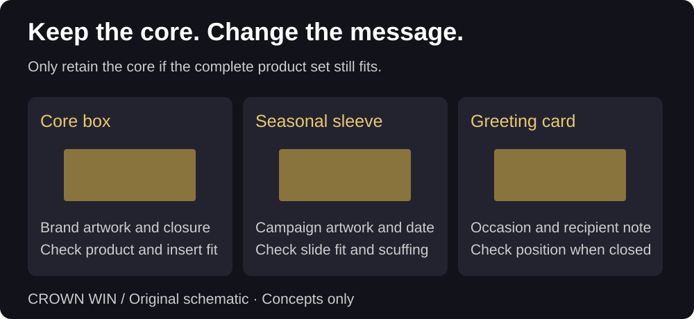
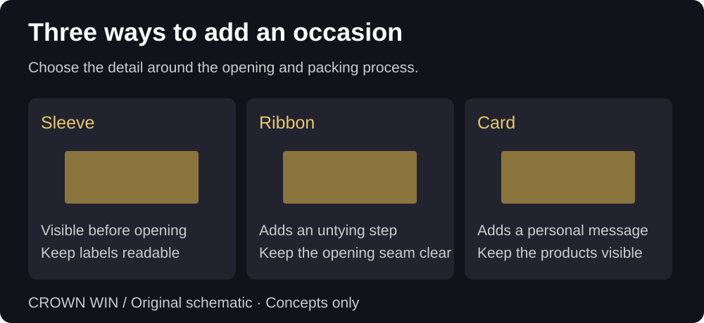
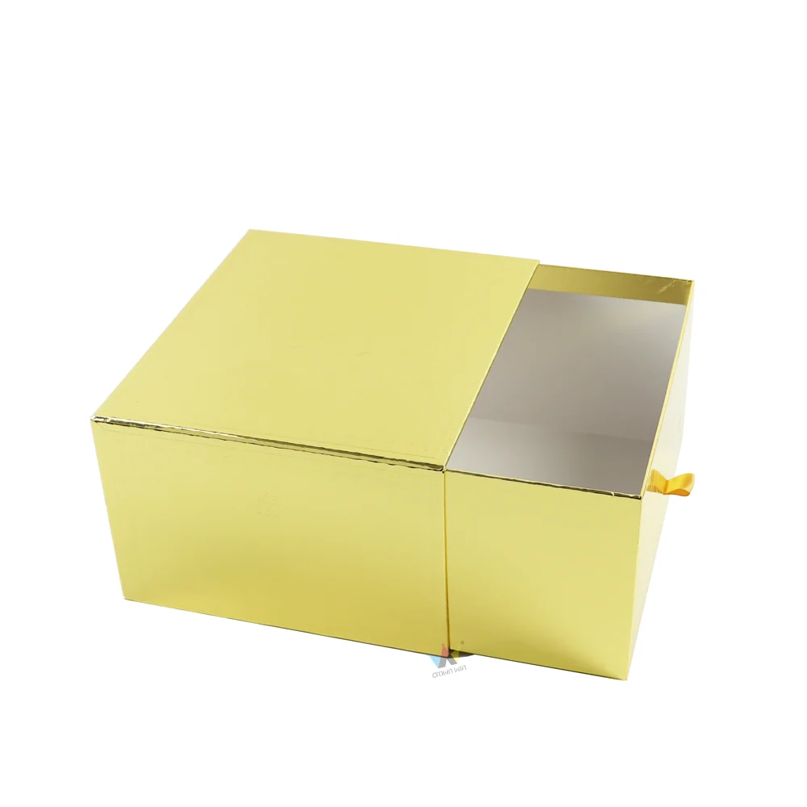
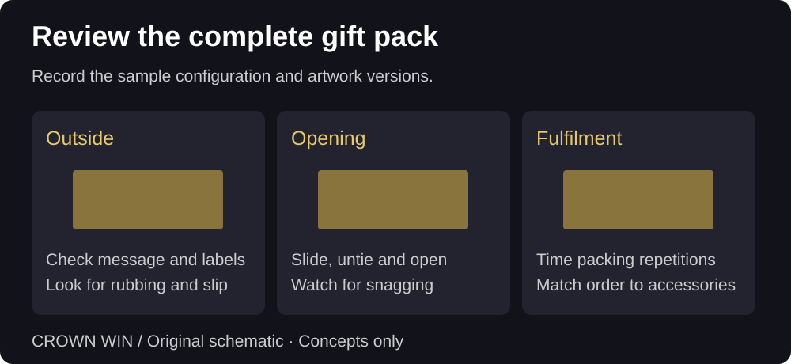

Seasonal Gift Packaging Ideas:
One Core Box, Different Holiday Details
Explore seasonal gift packaging ideas for brands: custom packaging sleeves, ribbon and cards. Compare fit, packing time and total campaign cost.
Quick answer: For an unchanged product set, consider retaining the core box and insert while moving seasonal artwork onto removable accessories. Compare total cost, assembly time and leftover stock before choosing this route.
What is the smallest change that still feels like a gift?
A candle seller in a Reddit discussion asked for a simple seasonal touch that would make the packaging feel more gift-worthy without complicated work. A reply suggested themed tissue and a sticker. This is an individual exchange, not evidence of sales uplift. It is a useful starting question: which part of the pack needs to change for this occasion, and which part can remain useful afterward?
How can one gift box work for Christmas and other occasions?
If the products stay the same, consider keeping the box dimensions, closure, insert and main brand artwork unchanged. Put the occasion-specific wording, date or colour accent on a sleeve, ribbon or card. A core box is not necessarily plain: a distinctive brand colour can remain constant while the message changes. This approach only works when the products still fit. A new bottle, a heavier jar or an added accessory may require a different insert or box.


Custom packaging sleeves, ribbon or cards: which should you choose?
Custom packaging sleeves (belly bands): printed paper or card bands that wrap around a closed box. They are useful when a clear campaign message needs to be visible before opening. Check the assembled box perimeter and sleeve fit. It should slide without scuffing the finish or slipping off. Keep required product information readable.
Ribbon for gift packaging: useful for a tactile gift-opening moment. Check knot position, tail length and tying time; keep it clear of a drawer pull or opening seam. Make it part of removable packaging rather than attaching decoration to a candle for use.
Message card: useful for a greeting, recipient note or occasion-specific story. Reserve space so it does not hide the product, block the insert or increase closing pressure. Confirm whether staff insert the card before or after packing the products.


Three product examples to discuss with a supplier
Use existing box formats as references for a sample discussion. The photographs below show catalogue products; the seasonal additions described here are proposed applications and are not shown in the photographs.
Beauty set: keep the fitted layout
A similar layout could keep the products and tray constant while a separate card carries the seasonal message. Test the card position without covering the product reveal.

Fragrance gift: try a removable sleeve
A plain closed box is a starting reference for a printed sleeve. For a fragrance application, confirm the actual bottle fit and insert first; the closed photograph does not show those details.

Small gift set: leave the drawer pull free
For a compact gift set, evaluate a card inside the drawer or a sleeve that can be removed before pulling. Any candle application needs a suitable vessel fit and weight check; this photograph shows an empty box.

Compare total campaign cost, not just the sleeve price
Ask for two quotes on the same product set and order quantity: a fully seasonal box, and a core box with separate seasonal components. Include print setup, minimum quantities, samples, freight, storage, packing labour and expected leftovers. Check whether components have different minimums. A cheaper printed part can still create extra stock or assembly work. Estimate a low-sales and a high-sales scenario; do not assume every seasonal component will be used. For example, a Christmas sleeve can carry the seasonal artwork while a separate card changes the greeting for another occasion. Recheck fit whenever the contents change. For a broader quote comparison, see our custom gift box quote guide.
Approve one complete gift pack before release
Pack the real products with the sleeve, ribbon and card. Check the outside message, slide off the sleeve, untie the ribbon, open the box and remove the products. Look for rubbing, hidden labels, awkward grips and parts that fall out. Time several packing repetitions and record component quantities and artwork revisions. Keep the approved sample as the reference for fulfilment.
If you sell several holiday versions, use a simple checklist linking the order code to the correct sleeve and card. For parcels, evaluate the complete transport pack separately. A decorative sleeve is not evidence of shipping protection.


What should you include in a quote brief?
Send the product list and dimensions, current box sample if available, campaign quantity, proposed sleeve or card artwork, target arrival date and destination. State which core elements must stay unchanged and ask who supplies and assembles each accessory. If you already have boxes in stock, provide representative samples before ordering sleeves to fit them.
Seasonal gift packaging questions
Can I use packaging sleeves for boxes I already have?
Yes, if samples confirm the fit. Send an assembled box with its contents and measure the finished outside dimensions. Check the sleeve seam, sliding direction and whether repeated removal scuffs the box.
Are belly bands the same as box sleeves?
A belly band is usually a narrower band around part of the box. A sleeve may cover more of it. Supplier terminology varies: specify the coverage, opening direction, material and seam on the drawing.
Can ribbon replace a printed sleeve?
Ribbon can add colour and an opening gesture, but it carries less printed information. Compare the visible message, tying time and how each option sits on the finished box.
Will separate holiday accessories cost less?
Not always. Compare setup, component quantities, storage, freight and packing labour with a fully seasonal box using the same product set and expected sales.
Research scope: Reddit comments are individual experiences, not a sales or cost study. No savings are assumed. The seasonal-bundle thread found in search could not be opened and is not used to support the recommendations.
Start with the core box.
Share your product set, quantity and campaign date to discuss a sample.
→ Request a Custom Quote